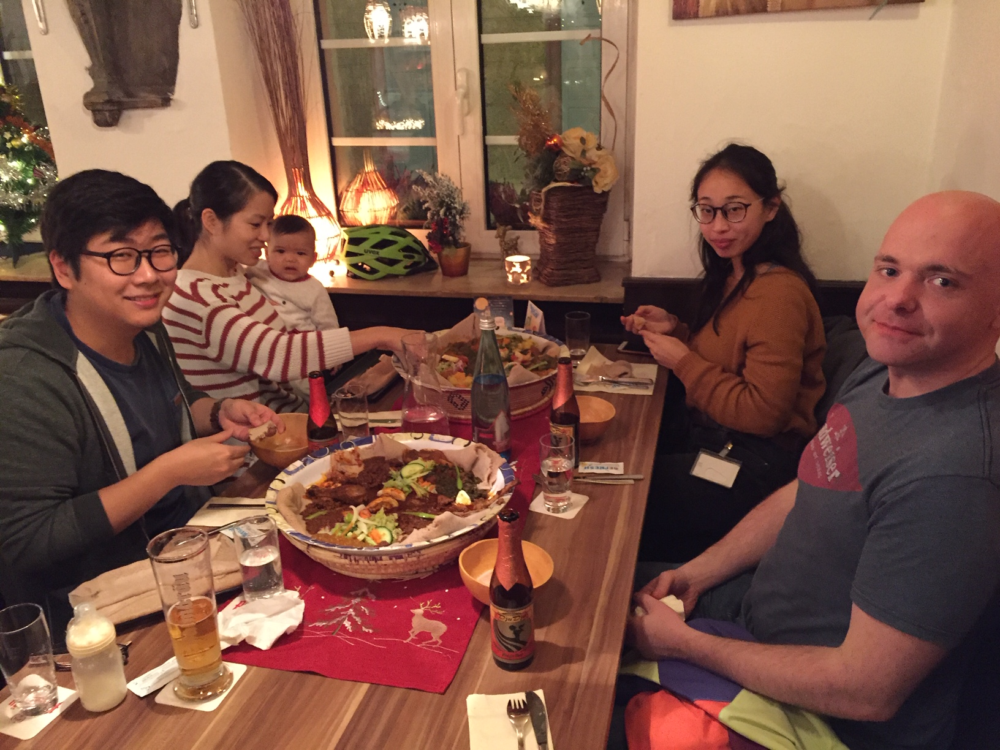

LAB PHOTOS

First Christmas dinner (2018)

Captain tiny arm and his side kick, baby giant hand
We are an international team of scientists who enjoy studying viruses. We use stem cell-derived culture systems to study hepatitis E virus-host interactions.
Our lab is a part of the Center of Integrative Infectious Disease Research (CIID) at the Heidelberg University Hospital. Our research is generously supported by the Chica and Heinz Schaller Foundation.
Principal Investigator
Lab manager
MD student
MD student
The Dao Thi lab uses stem cell-derived culture models to study hepatitis E virus (HEV). With about 20 million infections each year, leading to more than 3 million symptomatic cases and ~60'000 fatalities, HEV is believed to be the most common cause of acute hepatitis in the world. Despite increasing awareness, HEV remains an understudied virus. A contributor to the poor understanding is the difficulty to propagate HEV in cell culture. To overcome these limitations, we use embryonic or induced pluripotent stem cell (hESC/iPSC)-derived cell culture models, in particular stem-cell derived hepatocyte-like cells (HLCs; Figure 1).
Figure 1: Differentiation of human pluripotent stem cells (embryonic or induced, hESC/iPSCs) to hepatocyte-like cells (HLCs; Wu & Dao Thi et al. 2018, Gastroenterology).
Unlike conventionally used hepatoma cells, we found that HLCs are permissive for infection by primary isolates of all four HEV genotypes that can infect humans. HLCs therefore enable studies of authentic pan-genotype HEV biology. Further, the capability to study replication of non-adapted HEV isolates in tandem with autologous, patient-derived iPSCs enables personalized models of HEV infection and will serve as a platform for testing novel anti-HEV treatments (Figure 2).
Figure 2: Stem cell culture models of HEV infection. Cells collected from identified HEV positive individuals can be reprogrammed to generate iPSCs. Relevant SNPs can be repaired or introduced into established hESC/iPSC lines using CRISPR-Cas9, followed by differentiation to the cell type of interest. Differentiated cells can be directly infected with HEV isolates from patients or animals for modeling virus-host interactions in a dish (Dao Thi et al., 2018, Cold Spring Harb Perspect Med).
We also developed a novel stem cell-based differentiation protocol that uses transwell filters to generate columnar polarized HLCs. HEV is transmitted via the fecal-oral route and hepatocytes are similar to other epithelial cells polarized in vivo. In the absence of robust hepatocyte polarity systems our polarized HLC system now allows us to study directional HEV assembly and release, the final steps of the virus life cycle. Our efforts should lead to a better understanding of HEV life cycle and host interactions with the overriding goal of developing new specific antiviral treatments.
If you are interested in virology and stem cell technology, please apply. We are currently searching for MSc and PhD students.
This position has been filled
Hepatitis E virus trafficking in polarized human pluripotent stem cell-derived hepatocyte-like systems.
Hepatitis E virus (HEV) is the major cause of acute hepatitis in the world. Our lab uses stem cell technology to study HEV life cycle and HEV-host interaction. One particular aspect is HEV secretion, which is governed by its fecal-oral route transmission. The virus enters via the gastrointestinal tract and infects the liver, where it enters polarized hepatocytes from the bloodstream and exits with the bile to be shed into feces. We previously developed a novel differentiation protocol that allows columnar polarization of human embryonic or induced pluripotent stem cell (hESC/iPSC)-derived hepatocyte-like cells (HLCs) in transwells. Polarized HLCs can be infected with HEV on their basal side, with the majority of infectious virus being released to the apical compartment, recapitulating the directionality of infection occurring in vivo.
The successful applicant will combine this novel polarity system with genetic, biochemical, and imaging approaches to identify and characterize polarized trafficking and secretion routes of HEV. These efforts may help develop new strategies to block HEV assembly and secretion. Beyond virology, this work may lead to a better understanding of the fine-tuned spatio-temporal dynamics and regulation of the polarized trafficking machinery in hepatocytes.
Methods that will be used: A wide range of molecular and cell biological techniques with emphasis on live cell imaging using confocal microscopy; human tissue culture including embryonic and induced pluripotent stem cells and their differentiation to various cell types, mainly hepatocytes; 3D and complex co-culture systems; infection studies with human viruses in BSL2 and potentially BSL3 laboratories.
Personal qualifications: We are looking for a highly motivated, interactive and team-oriented candidate with a background and interest in molecular biology and virology. Applicants should hold a Master’s degree in Biomedical or Molecular Sciences, Biochemistry, Biology or related fields. Expertise in cell imaging and confocal microscopy is advantageous.
Please apply through the Heidelberg Biosciences International Graduate School (HBIGS).
Viet Loan Dao Thi, PhD Junior Group Leader
Center for Integrative Infectious Disease Research (CIID) University Hospital Heidelberg Im Neuenheimer Feld 344 D-69120 Heidelberg, Germany
+49 (0) 6221 563 56 43
VietLoan.DaoThi {at} med.uni-heidelberg.de